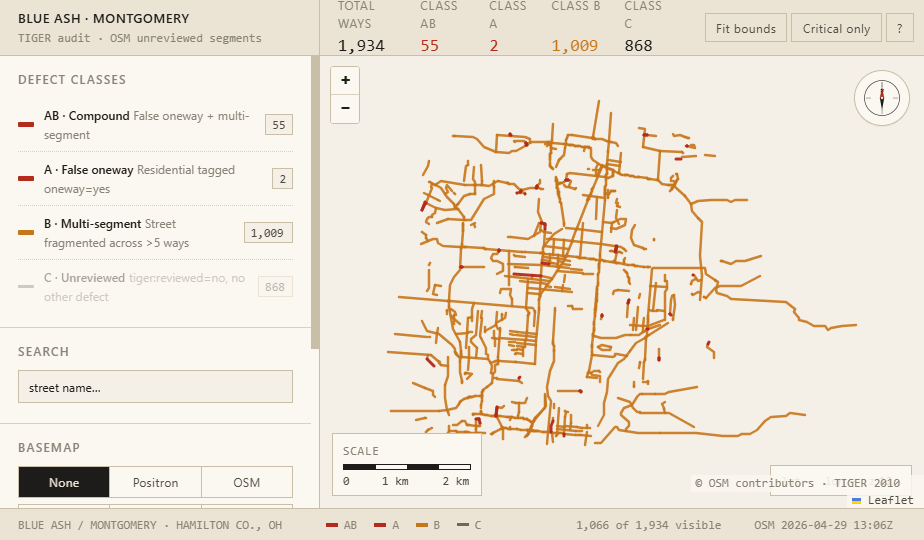

Abstract. SORTA's MetroNow microtransit service in Hamilton County, Ohio, is operated by Via Transportation against an OpenStreetMap (OSM) base layer in which a non-trivial residual of unreviewed ways persists from the 2007–2008 TIGER/Line bulk import. We present a four-zone read-only audit that enumerates every way carrying tiger:reviewed=no inside each MetroNow service-zone bounding box, classifies each into a four-element disjoint taxonomy (A false-one-way, B multi-segment, AB compound, C residual), and applies an endpoint-distance heuristic with junction-level spatial clustering to identify probable node disconnects between same-named segments. After cross-zone deduplication by OSM way ID and connected-components analysis on shared way IDs, the system-wide population is 6,096 unique unreviewed ways, of which 221 carry the compound defect and 710 are probable node disconnects. We characterise the heuristic's recall bias at zone boundaries, position the five methodological constraints that frame the result-set as a lower bound on the true defect population, and locate the audit within the comparability standard of 49 C.F.R. § 37.121 without pre-empting the legal question.
1. Introduction
The pipeline that delivers a microtransit ride to a residential address depends on a chain of base-map abstractions whose error budgets are rarely audited end-to-end. Where that chain consumes OpenStreetMap (OSM)1, the inherited error budget includes any uncorrected artefact of the 2007–2008 TIGER/Line bulk import that has persisted in unreviewed form for the intervening two decades. The operational consequence is asymmetric: a single false oneway=yes tag on a residential segment, or a missing intersection node between two segments of the same physical street, is sufficient to render a target address unreachable to a routing engine that treats the OSM graph as authoritative. For a transit-dependent rider, the distinction between “unreachable” and “denied service” is not a technicality.
This audit was prompted by a routing failure of that class observed within the author's own MetroNow service area. The case index proved non-idiosyncratic. We extend the analysis to all four MetroNow service zones and report a deduplicated population-level inventory of the same defect class, an explicit characterisation of the heuristics that produced it, and a discussion of where those heuristics undercount.
2. Background
2.1 The TIGER residual in OSM
The TIGER/Line bulk import (2007–2008) inserted a near-complete U.S. Census road graph into OSM, tagging each imported way tiger:reviewed=no to record the absence of human verification of geometry, topology, or attributes against ground truth.2 Two decades later, a substantial residual remains, distributed unevenly with respect to contributor density: in residential zones outside metropolitan cores, the surviving population of unreviewed ways correlates with the historical mapping activity of the local OSM community.3 Two failure modes recur in this residual: erroneous directional restrictions on residential dead-ends and cul-de-sacs that the import classified as one-way, and disconnected nodes in which two ways of the same physical street terminate within a few metres of each other without being joined at a shared OSM node, leaving the routing graph topologically disconnected at that vertex.
2.2 MetroNow, Via, and the QA locus
MetroNow is a microtransit service operated by SORTA under contract with Via Transportation, Inc., funded by the 0.8 % Hamilton County Issue 7 sales tax (2020). Via's routing engine consumes OSM as its base layer. The proprietary ViaMapping product augments the OSM base with speed data, turn restrictions, and points of interest; per publicly available product documentation, the augmentation is not described as auditing the underlying road-graph topology, verifying directional tagging, or detecting disconnected nodes.4 The locus of road-graph quality-assurance responsibility under the SORTA–Via contract is not publicly documented; this audit treats the question as open and addresses only the empirical predicate.
2.3 Heuristic vs. ground truth
OSM defect status is not abstractly resolvable: the canonical referent is the physical road. The audit therefore produces flagged candidates, not confirmed errors. Each candidate is paired with deep links to the iD editor and JOSM Remote Control pre-zoomed to the defect, supporting adjudication against satellite imagery, street-level photography (Mapillary, KartaView), historical imagery (Esri Wayback), and field knowledge before any OSM mutation is undertaken. The pipeline performs no mutation.
3. Methodology
3.1 Data acquisition
For each service zone Z with axis-aligned bounding box (s, w, n, e), a single Overpass query is issued:
[out:json][timeout:180];
way["highway"]["tiger:reviewed"="no"]
(s, w, n, e);
out geom tags;The out geom tags directive returns the full coordinate array of every way inline, supporting endpoint-based topology analysis without a second-round trip. The primary endpoint is https://overpass-api.de/api/interpreter; on transient failure the pipeline retries against the kumi.systems mirror and, only on full upstream failure, falls back to the most recent locally cached snapshot, with a console warning when cache age exceeds 14 days. A JSON-null response is treated as retryable rather than as a successful empty fetch. Each successful fetch is persisted as a timestamped snapshot for reproducibility; snapshots older than 14 days are auto-pruned with the three most recent retained per zone.
3.2 Defect classification
Each unreviewed way w is assigned to exactly one of four disjoint classes:
| Class | Predicate | Severity |
|---|---|---|
| A | highway = residential ∧ oneway = yes ∧ ¬B(w) | Critical |
| B | ∃ w' ≠ w: norm(name(w')) = norm(name(w)) ∧ ¬A(w) | High |
| AB | A(w) ∧ B(w) | Critical |
| C | ¬A(w) ∧ ¬B(w) | Low |
3.3 Probable-node-disconnect detection
Within each Class B street (the maximal set of ways sharing a normalised name), unordered way-pairs are enumerated and the minimum great-circle distance computed across the four candidate endpoint pairings using the haversine formula:
where R = 6,371,000 m approximates the WGS-84 mean Earth radius and (φ, λ) are latitude and longitude in radians. Pairs whose minimum endpoint distance falls in the half-open interval (0.01 m, 30 m] are emitted as candidate disconnects. The lower bound excludes already-coincident pairs; the 30 m upper bound balances recall against the false-positive rate from endpoints on disjoint segments of a long arterial.
Naive pairwise emission produces k(k − 1)/2 records for a junction at which k ≥ 3 ways converge without a shared node, conflating junction count with pair count. Because the unit of physical interest is the missing junction node rather than the unordered way-pair, a per-street spatial clustering pass is applied: candidates are sorted by gap distance ascending, and any candidate whose midpoint lies within 5 m of an already-retained representative is suppressed. The retained representative is therefore the tightest endpoint pair at each physical junction. The 5 m threshold is calibrated against residential geometry: wider than nominal lane width but narrower than the modal block dimension of the audited zones.
3.4 Cross-zone deduplication
The four service-zone bounding boxes overlap pairwise. The Northgate / Mt. Healthy ↔ Forest Park / Pleasant Run intersection covers approximately 32 km²; the Springdale / Sharonville ↔ Forest Park / Pleasant Run intersection approximately 14.5 km². A way inside any pairwise intersection is emitted by every per-zone audit it falls within. Per-zone counts are correct as zone-specific totals, but combined-zone aggregation requires explicit deduplication along three axes:
- Way deduplication by OSM way ID. The combined inventory contains each unique way exactly once.
- Multi-segment-street counting by transitive connected-components analysis over (name, way-ID set) groups. An arterial crossing a zone boundary collapses to one street; two unrelated streets sharing a name in zones with disjoint way-ID populations are counted separately. The transitive merge is required: a bridging group whose way IDs intersect two existing components must absorb both, not merely the first encountered.
- Gap deduplication in two passes — by unordered (wayi, wayj) pair, then by 5 m spatial proximity per street. The second pass captures the boundary case in which two zones independently elect different “tightest pair” representatives for the same physical junction.
4. Results
4.1 Per-zone totals
| Service zone | Total | Residential | Class A total5 | Class AB | Multi-seg streets | Node gaps |
|---|---|---|---|---|---|---|
| Blue Ash / Montgomery | 1,934 | 1,163 | 57 | 55 | 182 | 248 |
| Springdale / Sharonville | 1,549 | 856 | 97 | 95 | 160 | 182 |
| Northgate / Mt. Healthy | 1,664 | 1,075 | 47 | 44 | 129 | 148 |
| Forest Park / Pleasant Run | 2,066 | 1,109 | 85 | 83 | 156 | 264 |
| Per-zone sum (with overlap) | 7,213 | 4,203 | 286 | 277 | 627 | 842 |
| Hamilton County (unique) | 6,096 | 3,583 | 228 | 221 | 522 | 710 |
4.2 Population structure
Residential ways constitute 58.8 % of the deduplicated population (3,583 / 6,096). The compound-defect (Class AB) subpopulation, while small in absolute terms (n = 221 across 522 multi-segment streets), is the methodologically privileged target: each Class AB way carries both a directional-restriction error and an adjacent topology gap, the conjunction sufficient to produce complete unreachability rather than a sub-optimal approach. The disjoint Class A and Class B populations are individually larger but their per-way severity is dominated by missed approach geometry, not by unreachability.
4.3 Index case
One of the two single-segment Class A ways in the Blue Ash / Montgomery zone is the index case from which this audit was constructed. The way carries oneway=yes despite being two-way on the ground, and one of its endpoints sits within the 30 m gap interval relative to a terminating node of the principal cross street, above the coincidence floor. Direct observation of dispatched MetroNow vehicles attempting to terminate at addresses on this segment confirms a reproducible navigation failure consistent with the predicted routing-graph topology error. The case index is not in itself the contribution of the audit; it is the existence proof that the failure mode the population-level inventory is designed to enumerate is empirically operative.
5. Discussion
5.1 Methodological constraints
The flagged population should be read as a lower bound on the true defect set rather than as a complete enumeration. Five constraints structure the gap between the two.
Heuristic vs. ground truth. The tiger:reviewed=no tag records the absence of human verification, not the presence of error; a way carrying the tag may be entirely correct. Conversely, ways from which a prior editor removed the tag without fully verifying the geometry are outside the audit's discrimination and remain a contributing population for routing failure.
Name-string equivalence. Class B grouping is keyed on case-insensitive equality of the OSM name tag. Physically distinct streets sharing a name across non-adjacent geographies are correctly separated by the system-level connected-components dedup but may be conflated within a single per-zone audit when the bounding box encloses disjoint segments of two same-named streets.
Endpoint-only gap detection. The 30 m threshold operates on way endpoints. Mid-way disconnects—e.g. a short connecting road that should split a long way into two—lie outside the heuristic's discrimination.
Cross-zone-boundary blind spot. A probable disconnect whose two participating ways lie strictly in different zones (each zone's bounding box contains exactly one of the pair) is not detected by any per-zone audit. Recall is consequently biased against zone-boundary defects.
Cache-fallback freshness. Upstream-failure paths fall back to the most recent cached Overpass snapshot. Cached payloads are revalidated for dictionary-typed top-level structure, list-typed elements, and a <100-element sanity threshold, but cache age relative to recent OSM activity is not enforced; results from a stale cache may diverge from current OSM state without flagging.
5.2 Comparability under 49 C.F.R. § 37.121
49 C.F.R. § 37.121 obliges complementary paratransit to provide service comparable to fixed-route service for individuals with disabilities. Whether base-map–driven navigation failures, where they prevent service termination at residential addresses inside a designated service zone, are cognizable under the comparability standard is a legal question this audit does not resolve and that warrants counsel review by the relevant agency. The technical predicate—whether such failures empirically occur, and at what scale—is what the audit is designed to characterise.
5.3 Generalisation
The methodology is not specific to MetroNow, Hamilton County, or Via Transportation. Any routing service consuming OSM inside a geography subject to the TIGER import inherits the same residual defect population, modulo local contributor density. The pipeline is parameterised on bounding box and is in principle redeployable across U.S. counties; a comparative audit across multiple counties would render the population-density correlation hypothesis advanced in § 2.1 empirically testable.
6. Implications and remediation pathways
The audit serves two distinct downstream constituencies and is structured to be actionable to each without further intermediation.
OSM volunteer community. Each flagged way and each disconnect candidate is paired with deep links to the iD editor and JOSM Remote Control pre-zoomed to the defect coordinate. The 221 Class AB defects constitute the highest-priority subpopulation by failure-mode severity: their evaluation and remediation against canonical referents (satellite imagery, street-level photography, field knowledge) is the lowest-effort intervention with the highest expected impact on MetroNow service availability inside the four zones.
Operator and contracting authority. SORTA and Via Transportation. The findings warrant acknowledgement of the empirical predicate, scoping of contractual road-graph QA obligations between the parties, and consideration of a recurring map-quality assurance process tied to operationally significant service geographies. The legal question raised in § 5.2 is logically independent of the technical findings and is left to counsel.
The complete dataset, the per-zone workbooks, the interactive dashboards, and the pipeline source are openly available at github.com/AICincy/Tiger; the dashboards are browsable at aicincy.github.io/Tiger. Reproduction requires Python 3.11+ and the two dependencies pinned in requirements.txt; per-zone runtime is approximately one minute on a network-warm machine. The methodology, the dedup operations, the haversine-threshold calibration, and the cache-fallback path are open to re-derivation, contestation, and replacement by any reader from the cited sources of record.
Appendix A. Design handoff — alternative cartographic presentation
A high-fidelity design reference for an alternative presentation of the audit data is included in the repository at design_handoff_tiger_audit_map/. The handoff packages two working HTML prototypes — a flat Leaflet 2D view and a MapLibre GL JS 3D view with pan / tilt / zoom — against the Blue Ash / Montgomery dataset, in a deliberately warmer cartographer palette than the production Leaflet dashboard. The prototypes are reference-only: typography, spacing, hover-and-selection states, and copy are at production fidelity, but the artefacts are not intended to ship as-is. The intended downstream is a port into a modern application stack (the handoff recommends React + Vite), preserving the visual grammar while replacing the demonstration scaffolding.

map_2d.html): three-row CSS-grid layout with header KPI strip, 320 px sidebar, scaled map canvas, and footer status row. Class AB and Class A render in the critical-defect colour ramp; Class B in the multi-segment ramp; Class C de-emphasised. Live: map_2d.html.The 3D variant uses a dark control-room palette with IBM Plex typography, MapLibre GL JS for tilt/orbit camera, and reserved tokens for node-disconnect markers. It captures aerial imagery, OSM-standard, and dark basemaps; native pan-tilt-zoom controls are the principal interaction. Live: map_3d.html.
The handoff README documents the full design-token tables (warm cartographer 2D and dark control-room 3D), component specifications down to the pixel for header / sidebar / class filter / basemap picker / selection panel, the data model (data.json, ways.geojson), and a CAPTURE-MEDIA appendix with browser-console scripts for the 3D screenshots and a 24-frame orbit-sweep GIF.
Notes
- Provenance, licence (Open Database Licence, ODbL), and contributor norms documented at openstreetmap.org/about.
- U.S. Census Bureau, TIGER/Line Shapefiles (census.gov); OSM-side import history and remediation conventions at the TIGER fixup page.
- Asserted as a positioning claim consistent with the spatial distribution observed in the present audit and with prior community discussion of TIGER residuals; not formally measured here. A formal test requires a multi-county comparative audit, indicated in § 5.3.
- Sourced from publicly available ViaMapping product documentation as of April 2026. Not a reading of any contract instrument, and the SORTA–Via contractual division of road-graph QA responsibility is not visible to this author. Counsel review of the operative contract is recommended before any operational claim is grounded in the documentation summary.
- The “Class A total” column reports |{w : A(w) ∨ AB(w)}|, i.e. the union (single-segment Class A) ∪ (compound Class AB). Single-segment-only Class A = Class A total − Class AB. The two columns are reported separately because the dashboard renders the categories as disjoint KPI cards while the per-zone XLSX preserves the union for historical compatibility.
Road data © OpenStreetMap contributors, ODbL. TIGER/Line: U.S. Census Bureau, public domain. Tile imagery on the live dashboards: CARTO Voyager (OSM-derived), Esri World Imagery and Wayback (public tiers). Independent work; no affiliation is asserted with SORTA, Via Transportation, or the OpenStreetMap Foundation.